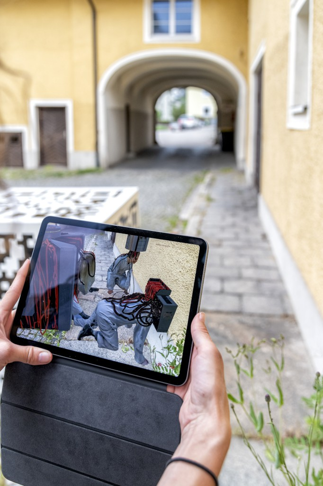

Sound accompanies each sculpture.Nothing to see here is an interactive multimedia installation by Unnur Andrea Einarsdottir (IS) and Boris Kourtoukov (RU/CA). As the viewer explores their surroundings through an Augmented Reality application, digital sculptures emerge dynamically around them.
The audience is invited to get a glimpse of something they are not really meant to see; the daily operations of the DRM (Department of Reality Maintenance). Two agents of the department are on duty trying to find the source of an error, a glitch, working long hours to make sure everything runs smoothly and that our world continues to appear consistent and intact. They are mired in the very guts of this world, the endless wiring that perpetuates our shared reality.
Photo: Violetta WakolbingerDigital networks and infrastructures have come to be what binds and holds our world together, making it hard for us to imagine what the world would look like if they were to collapse or disappear. We tend to forget the physicality of these immense structures, driven by gigantic power grids and claiming a large share of the world’s energy output and natural resources. Likewise, we tend to forget the invisible parts of the network’s anatomy, the thousands of signals with data passing through our bodies and the air around us each and every day.
Nothing to see here challenges our perception of reality, uniting the audience in a digital experience they can agree is there, while we all know it is not actually really there.
AR Application:
DRM Observer provides a window into Department of Reality Management's invisible operations all around the world. Using AR you are able to see their operatives at work.
{kind=link}

{kind=link}
{kind=link}
{kind=link}
{kind=link}